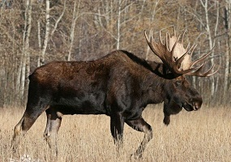
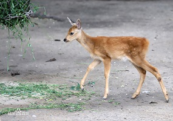
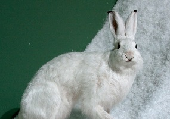
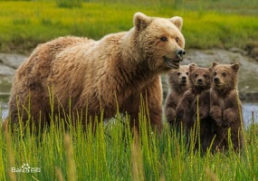
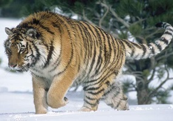
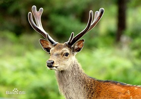
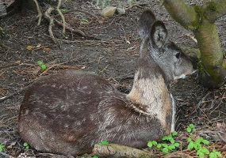
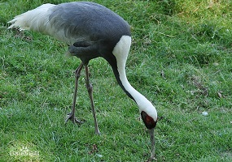

动物专栏
保护动物百科-

驼鹿
驼鹿（英文名称：moose）：是世界上最大的鹿科动物，驼鹿属下共有2个物种8个亚种。驼鹿的名称取意于其肩高于臀，与骆驼相似。以雄性的掌形鹿角为特征。驼鹿为典型的亚寒带针叶林食草动物，单独或小群生活，多在早晚活动。分布于欧亚大陆的北部和北美洲的北部。不同亚种的毛色有所不同。 驼鹿为国家一级保护动物。
-

袍子
狍子（学名：Capreolus pygargus）：体长约1.2米，重约30千克，有着细长颈部及大眼睛，大耳朵。无獠牙，后肢略长于前肢，尾短，雄狍有角，雌狍无角，雄性长角只分三个叉。狍身草黄色，尾根下有白毛，尾巴仅2-3厘米，雄狍角冬天脱落，新角最迟3月开始生长，6、7月长成，此时进入发情期。狍通常是双胞胎。
-

雪兔
雪兔（拉丁学名：lepus timidus），是寒带、亚寒带代表动物之一，是一类个体较大的野兔，体长一般在510毫米左右。耳朵短，尾巴亦短，是中国九种野兔（其余八种为东北兔、东北黑兔、华南兔、草兔、高原兔、塔里木兔、云南兔和海南兔）中尾巴最短的。雪兔为了适应冬季严寒的雪地生活环境，冬天毛色变白，直到毛的根部；耳尖和眼圈黑褐色；前后脚掌淡黄色；夏天毛色变深，多呈赤褐色，是中国唯一冬毛变白的野兔。
-

棕熊
棕熊（学名：Ursus arctos）：是哺乳纲、熊科的动物。亦称灰熊。是陆地上食肉目体形最大的哺乳动物之一，体长1.5-2.8米，肩高0.9-1.5米，雄性体量135-545千克，雌性体重80-250千克。头大而圆，体形健硕，肩背隆起。被毛粗密，冬季可达10厘米；颜色各异，如金色、棕色、黑色和棕黑等。前臂十分有力，前臂在挥击的时候力量强大，“粗钝”的爪子可以造成极大破坏。
-

东北虎
西伯利亚虎（学名：Panthera tigris ssp.altaica）：又称东北虎，是虎的亚种之一。是现存体重最大的肉食性猫科动物，成年雄性西伯利亚虎体重平均为250千克，头体长约为2.3米；成年母虎平均体重约为170千克，体长约为2米，肩高1.1米左右，尾长1.3米左右。最大身长可达2.9米（含尾长）。头大而圆，前额上的数条黑色横纹，中间常被串通，极似“王”字，故有“丛林之王”之美称。
-
 丹顶鹤
丹顶鹤丹顶鹤（学名：Grus japonensis）：是鹤科、鹤属的一种大型涉禽，体长120-160厘米。颈、脚较长，通体大多白色，头顶鲜红色，喉和颈黑色，耳至头枕白色，脚黑色，站立时颈、尾部飞羽和脚黑色，头顶红色，其余全为白色；飞翔时仅次级和三级飞羽以及颈、脚黑色，其余全白色，特征极明显，极易识别。幼鸟头、颈棕褐色，体羽白色而缀栗色。分布于中国东北，蒙古东部，俄罗斯乌苏里江东岸，朝鲜，韩国和日本北海道。
-

梅花鹿
梅花鹿（学名：Cervus nippon）是一种中小型鹿，体长125至145厘米，尾长12至13厘米，肩高70至95厘米，体重70至100千克。毛色夏季为栗红色，有许多白斑，状似梅花；冬季为烟褐色，白斑不显著。颈部有鬣毛。雄性角长达30至66厘米。 梅花鹿群居性不强，雄鹿往往是独自生活，活动时间集中在早晨和黄昏，生活区域随着季节的变化而改变，春季多在半阴坡，夏秋季迁到阴坡的林缘地带，冬季则喜欢在温暖的阳坡，主要以草、水果、草本植物、树芽、树、农作物为食。种群主要分布在俄罗斯东部、日本和中国。是中国国家一级保护动物。
-

原麝
原麝（学名：Moschus moschiferus），俗称香獐子，是麝科、麝属的动物。原麝头小、眼大，耳长而直立，尾短，四肢细长，后肢长于前肢，雌雄均无角，全身暗褐色。 原麝常单独活动，一般晨昏活动较为频繁，极善跳跃，视、听觉发达，有较为固定的活动、觅食路线，食性很广，每年10月至翌年1月发情，6-7月份产子，每胎1-2头，多在针阔混交林、针叶落叶林、针叶混交林、疏林灌丛地带的悬崖峭壁和岩石山地生境中栖居，分布于中国、哈萨克斯坦、朝鲜民主主义人民共和国、韩国、蒙古、俄罗斯联邦。
-

白枕鹤
白枕鹤（学名：Grus vipio）体形与丹顶鹤相似，略小于丹顶鹤，而大于白头鹤。上体为石板灰色。尾羽为暗灰色，末端具有宽阔的黑色横斑。取食时主要用喙啄食，或用喙先拨开表层土壤，然后啄食埋藏在下面的种子和根茎，边走边啄食。该鸟为稀有的笼养观赏鸟类，主要繁殖在黑龙江、吉林等省或更北的广大地区，冬天部分迁徙到江苏、安徽、江西等省的湿地越冬。白枕鹤为中国国家一级保护珍禽。